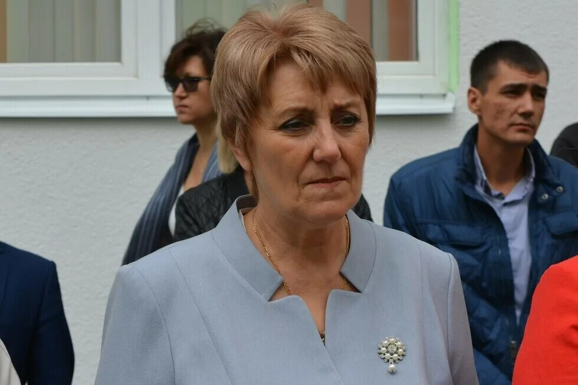

Шабаш Валькирии
«Шабаш Валькирии» — анонимный независимый канал, разоблачающий шабаш, что устроили власть имущие на земле Саратовской. Создан 4 февраля 2025 года. Канал специализируется на Саратовской региональной информационной обстановке. Команда не поддерживает ни одну из политических партий, выступает за население, поддерживает честность. На сайте вы можете найти оперативные новости, комментарии на злобу дня, расследования на чиновников Саратовской области, а также уникальные рубрики.
#ЧестныеВыборы64
Рейтинг «Единой России» упал ниже 30%, в Саратовской области партию поддерживают менее 20%. Честно победить на выборах партия не сможет, поэтому «Шабаш Валькирии» запускает акцию #ЧестныеВыборы64.
Либо мы боремся за своё будущее, либо получаем власть, которая годами разворовывала бюджет.
Подробнее об акции →📰 Актуальные новости
Серёженька обиделся
Итоги праймериз
Оптимизация по-саратовски
Детский лагерь — замена гаджету
Бусаргин отчитал министров
📁 Досье
